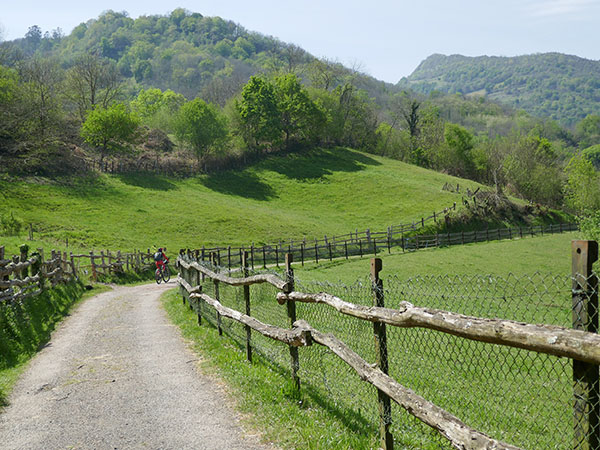

-
Camino Primitivo
Etapa 1: Oviedo-Tineo (Carretera)
Etapa 2: Tineo-Grandas (Carretera)
Etapa 3: Grandas-Fonsagrada (Carretera)
-
En familia-Vías Verdes
VV Valle de Loredo
VV Senda del Oso Tuñón-Caranga
VV Senda del Oso Caranga-Entrago
VV Senda del Oso Caranga-Valdemurio
VV del Eo
VV Valle de Turón
VV de La Camocha-Senda Fluvial

VV de Fuso-Trubia
VV Río Turbio
VV del Ferrocarril Estratégico
VV del Tranqueru
-
Fin de semana
La Reconquista (Carretera)
Ruta de Los Tres Parques Naturales (Carretera)
Bienvenidos al Angliru (Carretera)
Ruta Paisajística de Los Puertos (Carretera)
Cuevallagar y Banduxo (Gravel)
Camino de Santiago Oriente (Gravel)
Ruta del Prerrománico (MTB)
Comarca de La Sidra (MTB)
VV Fuso-VV Senda del Oso (Gravel)